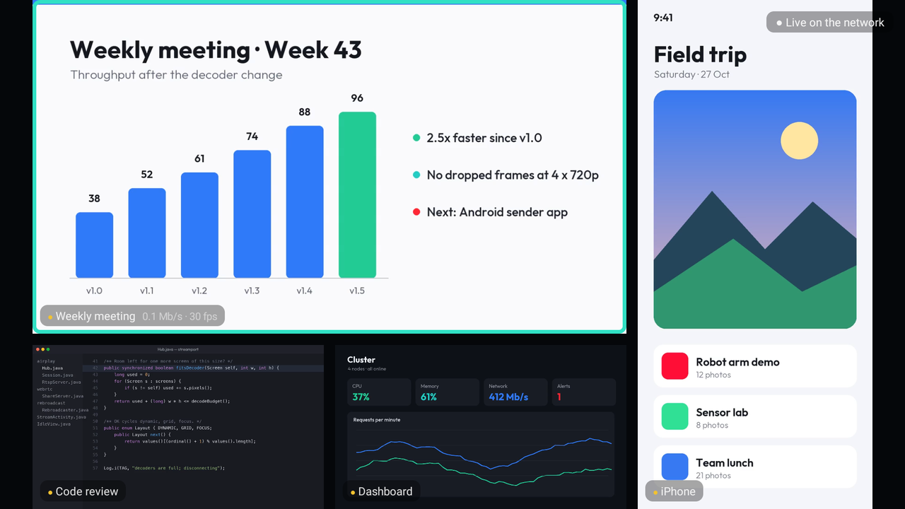
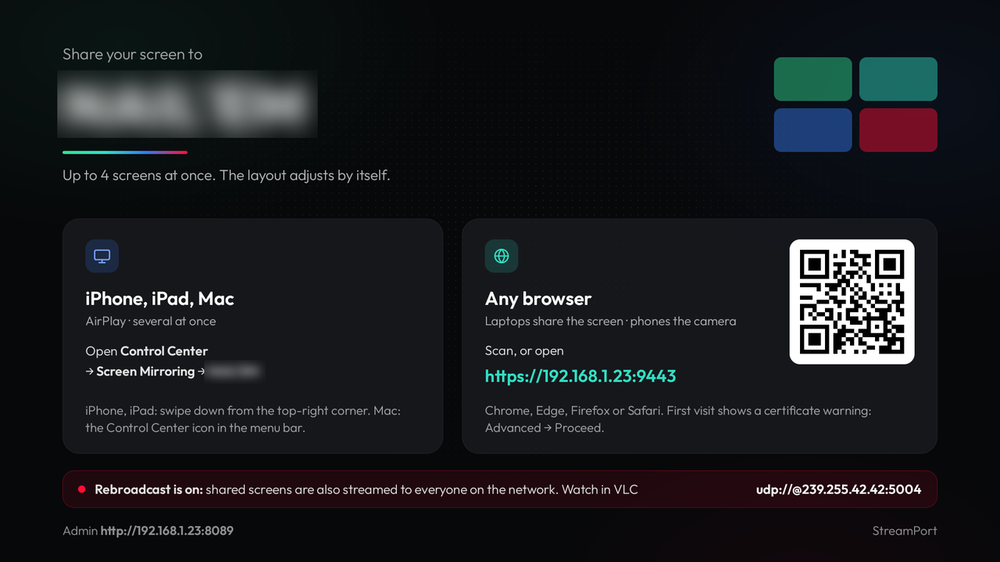
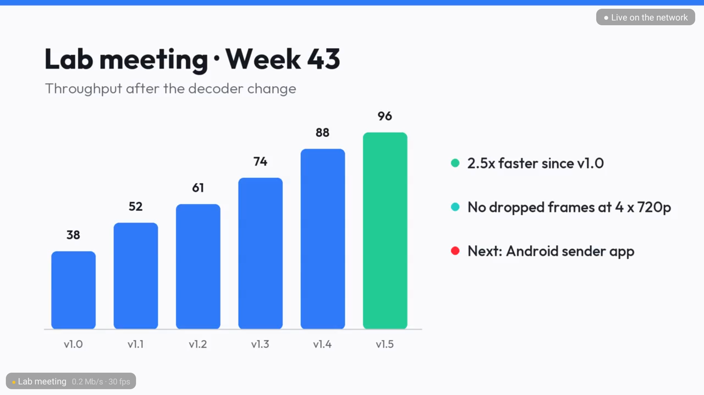

Turn the meeting room TV into a shared screen
Up to 4 people share at once and the TV lays them out automatically. iPhone, iPad and Mac use AirPlay (Screen Mirroring); laptops and phones use any browser. Nothing to install on the senders.

Several at onceUp to 4 screens side by side. The biggest goes to whoever is
presenting; OK on the remote switches to a grid or to one screen.
No app on the sendersApple devices use Screen Mirroring. Everyone else scans the
QR code on the TV and shares a screen or a camera from the browser.
Runs on a cheap boxAny Android TV box with Android 11 or later. Tested on the
Xiaomi TV Box S (2nd gen).
What it looks like

